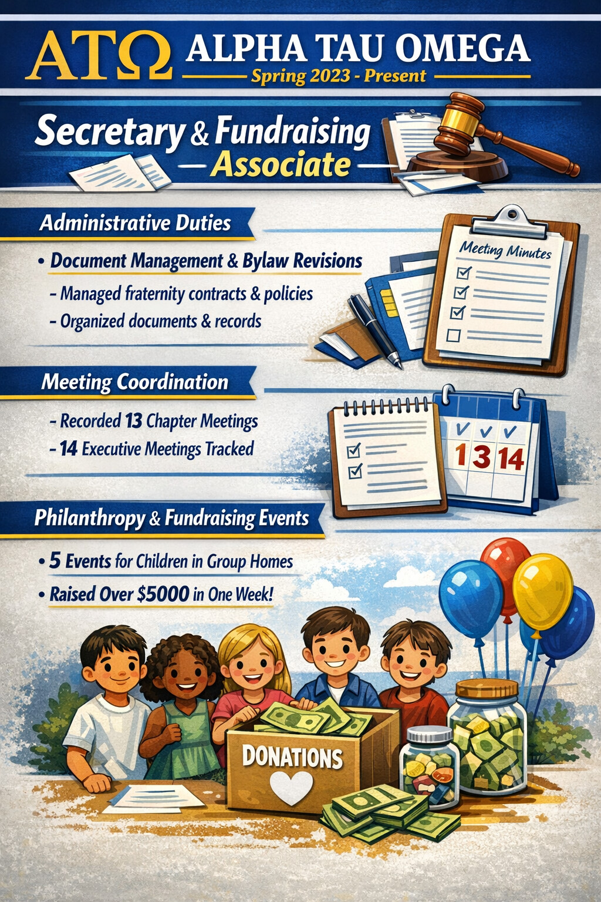
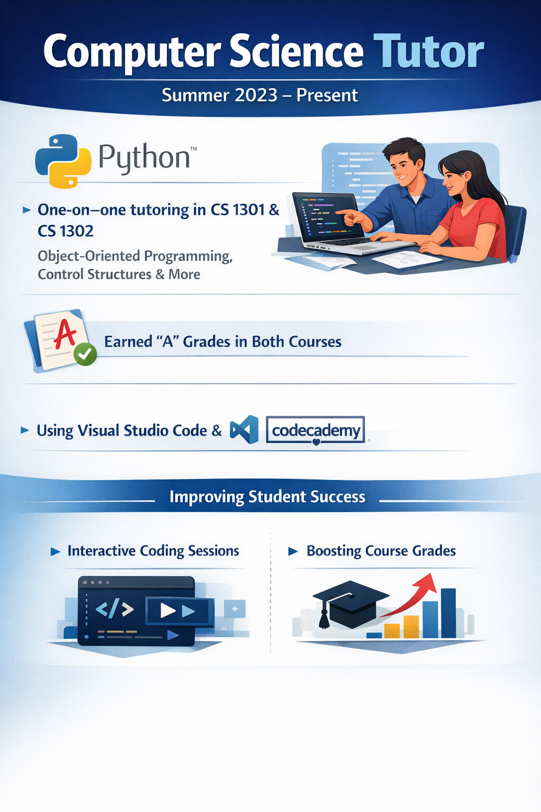

Built an application that displays current MLB team ranking statistics such as wins and losses
as well as allows users to add these statistics manually to the application for
personal analysis of sports analytics
Utilized official MLB.com API to retrieve regular season rankings
Alpha Tau Omega

Led administrative duties including document management and revision of fraternity general/financial contracts and bylaws
Recorded and structured meeting minutes and member
attendance for 13 chapter meetings and 14 executive meetings over the course of the semester
Supervised fundraising and philanthropy programs through the ATO fraternity for children in group
homes through 5 events and raised over $5000 in one week
Computer Science Tutor

Provided one-on-one tutoring on topics including object-oriented programming, control structures, etc.
to students enrolled in CS 1301 & 1302 following the completion of both courses with a letter grade of A
Utilized code editors and online learning platforms such as Visual Studio Code and Codecademy to promote interactive
coding sessions that are easy to follow, ensuring students were proficient in topics covered and improved their overall course grades